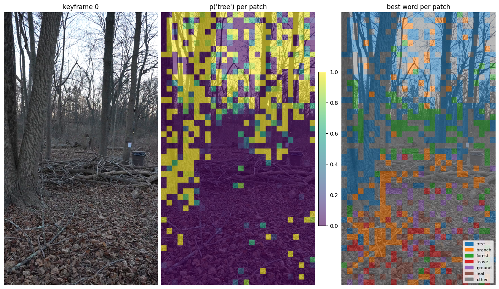
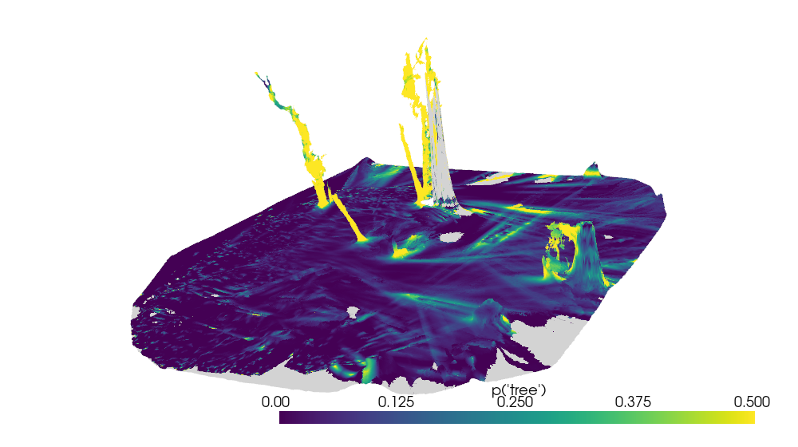

OCR Lens#
The OCR lens reads the scene as words, without a text query. For every mesh vertex it stores the words the surface most likely shows, each with a probability. It runs a vision-language model (LLaVA-1.6) on each keyframe and turns each image patch into word probabilities. The model weights must already be in the local Hugging Face cache.
[1]:
import os
import cv2
import matplotlib
import matplotlib.pyplot as plt
import numpy as np
import pyvista as pv
import torch
import transformers
import zarr
from matplotlib.colors import ListedColormap
from matplotlib.patches import Patch
from collab_splats.pointcloud import PointcloudResult
from collab_splats.preproc.frames import frame_paths
from collab_splats.reconstructor import store_rows
from collab_splats.semantics import FeatureAutoencoder
from collab_splats.semantics.features.ocr_lens import (
load_decoder,
load_processor,
word_probabilities,
word_vocabulary,
)
from collab_splats.utils.io import read_image
from collab_splats.utils.visualization import apply_view, camera_view
# Use the cached model weights only; set before the model libraries load
os.environ["HF_HUB_OFFLINE"] = "1"
transformers.logging.set_verbosity_error()
%run ../tutorial.py
scene = tutorial_scene("preproc", "pointcloud", "mesh", "semantics", extractor="ocr_lens")
# Image panels without axes
BARE = {"frame_on": False, "xticks": [], "yticks": []}
1. Top words on the mesh#
The stage stores, per vertex, the 64 most likely words and their probabilities. A vertex no keyframe saw has all-zero probabilities.
The ten most common best words across the mesh:
[2]:
store = zarr.open(str(scene.lifted_stores["ocr_lens"]), mode="r")
word_ids = np.asarray(store["vertex_word_ids"])
word_probs = np.asarray(store["vertex_word_probs"], dtype=np.float32)
words = list(store.attrs["words"])
observed = word_probs[:, 0] > 0
print(f"{observed.mean():.1%} of {len(observed):,} vertices observed, {len(words):,} words\n")
# Count each observed vertex's best word
counts = np.bincount(word_ids[observed, 0], minlength=len(words))
for word_id in np.argsort(counts)[::-1][:10]:
print(f"{words[word_id]:15s} {counts[word_id]:>8,} vertices")
98.9% of 335,017 vertices observed, 3,512 words
forest 80,010 vertices
tree 75,952 vertices
log 32,615 vertices
leave 25,230 vertices
grass 19,556 vertices
branch 10,856 vertices
ground 10,404 vertices
road 8,972 vertices
leaf 8,263 vertices
rock 6,262 vertices
2. One keyframe#
The stage keeps every keyframe’s patch states in compressed form. Decoding them needs only the model’s last layers (load_decoder, about 260 MB), not the full 7B model.
Decode keyframe 0 into word probabilities per patch:
[3]:
codes_path = scene.semantics_cache_dir / "ocr_lens_codes.zarr"
codes = zarr.open(str(codes_path), mode="r")["features"]
cloud = PointcloudResult.load_zarr(scene.pointcloud_zarr, load_world_points=False)
row = store_rows(scene.images_dir, cloud.image_paths)[0]
model_id = "llava-hf/llava-v1.6-vicuna-7b-hf"
ae = FeatureAutoencoder.load(codes_path / "autoencoder.pt").to("cuda")
decoder = load_decoder(model_id)
vocab = word_vocabulary(load_processor(model_id).tokenizer)
# Patch codes as rows, decoded to one probability per word
fmap = torch.from_numpy(codes[row]).float()
channels, height, width = fmap.shape
states = fmap.reshape(channels, -1).T
patch_probs = torch.cat([p for p, _ in word_probabilities(states, decoder, vocab, ae=ae)])
patch_probs = patch_probs.cpu().numpy()
print(f"patch grid {height} x {width}")
patch grid 48 x 28
The keyframe, how likely each patch reads as “tree”, and each patch’s best word:
[4]:
image = np.asarray(read_image(frame_paths(scene.images_dir)[row]))
frame_size = (image.shape[1], image.shape[0])
# Probability of the probe word, upsampled to the frame
probe = "tree"
probe_map = patch_probs[:, words.index(probe)].reshape(height, width)
probe_heat = cv2.resize(probe_map, frame_size, interpolation=cv2.INTER_NEAREST)
# Best word per patch: the six most common keep a color, the rest are "other"
best = patch_probs.argmax(axis=1)
ids, counts = np.unique(best, return_counts=True)
common = ids[np.argsort(counts)[::-1][:6]]
labels = np.full(len(best), len(common))
for k, word_id in enumerate(common):
labels[best == word_id] = k
label_map = cv2.resize(
labels.reshape(height, width).astype(np.uint8), frame_size, interpolation=cv2.INTER_NEAREST
)
colors = [*matplotlib.colormaps["tab10"].colors[: len(common)], "grey"]
titles = ["keyframe 0", f"p({probe!r}) per patch", "best word per patch"]
fig, axes = plt.subplots(1, 3, figsize=(13, 7.5), subplot_kw=BARE, layout="constrained")
# The frame under every panel
for ax, title in zip(axes, titles):
ax.imshow(image)
ax.set_title(title)
heat = axes[1].imshow(probe_heat, cmap="viridis", alpha=0.6, vmin=0, vmax=1)
fig.colorbar(heat, ax=axes[1], fraction=0.05, pad=0.02, shrink=0.6)
axes[2].imshow(label_map, cmap=ListedColormap(colors), vmin=0, vmax=len(common), alpha=0.55)
legend = [Patch(color=c, label=w) for c, w in zip(colors, [*[words[i] for i in common], "other"])]
axes[2].legend(handles=legend, loc="lower right", fontsize=8)
[4]:
<matplotlib.legend.Legend at 0x7f4944331650>

Single patches are noisy, but the regions make sense: canopy reads as “tree”, the brush pile as “log”, sticks as “branch”. Lifting averages each vertex over every keyframe that saw it.
3. A word on the mesh#
The probability of “tree” on every vertex, seen from the side. Grey vertices were never seen:
[5]:
hit = word_ids == words.index(probe)
scores = (word_probs * hit).sum(axis=1)
scores[~observed] = np.nan
mesh = pv.read(scene.outputs["mesh"])
plotter = pv.Plotter(window_size=(1000, 560))
plotter.add_mesh(
mesh,
scalars=scores,
cmap="viridis",
clim=(0, 0.5),
nan_color="lightgrey",
lighting=False,
scalar_bar_args={"title": f"p({probe!r})"},
)
apply_view(plotter, camera_view(cloud.extrinsics, mesh.points))
plotter.show()

The trunks read as “tree” all over, while the ground stays dark. The color range stops at 0.5 so surfaces where “tree” is one of several likely words still show.
In a pipeline run#
The semantics stage does all of the above when ocr_lens is in its extractors:
semantics:
extractors: [ocr_lens]
The scene viewer serves the mesh with a word search and a click probe:
python -m collab_splats.viewer local data/tutorial_scene/vggt_omega --port 8080